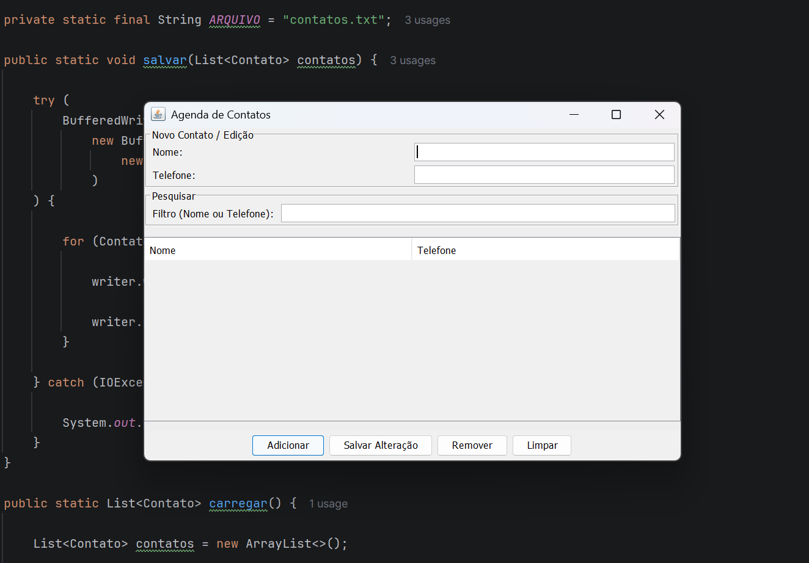

Sobre o Projeto
A Agenda de Contatos é uma aplicação desenvolvida em Java com o objetivo de praticar conceitos de Programação Orientada a Objetos e manipulação de arquivos.
O sistema permite cadastrar, editar, buscar e remover contatos, mantendo as informações salvas em um arquivo físico.
Demonstração

Execução da aplicação no terminal, mostrando o menu principal e as funcionalidades disponíveis para o usuário.
Funcionalidades
- Cadastrar contatos
- Listar contatos
- Buscar contatos
- Editar contatos
- Excluir contatos
- Salvar os dados em arquivo
O que aprendi
- Classes e Objetos
- Encapsulamento
- Métodos
- Manipulação de Arquivos
- Organização de Projetos
- Versionamento com Git
Repositório
O código-fonte está disponível no GitHub, já tendo a primeira release lançada (V1.0).
Acessar Repositório